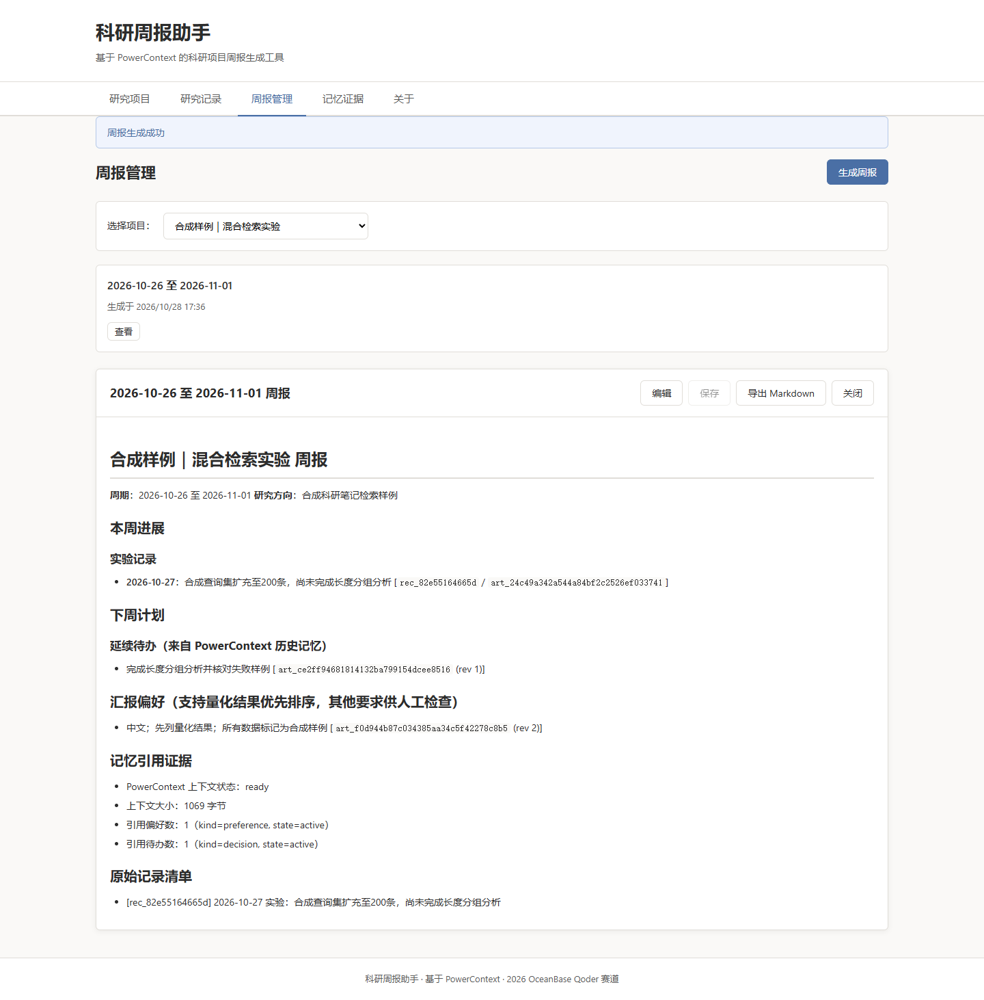
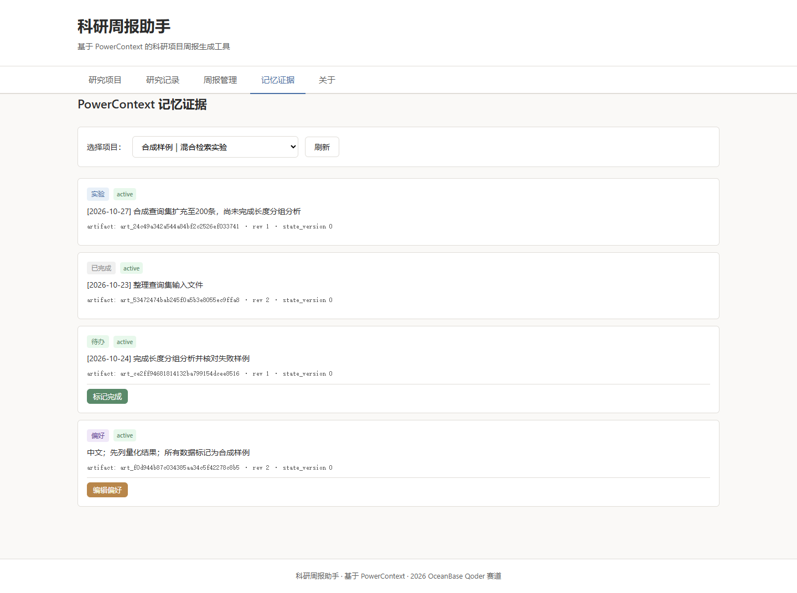

科研周报的痛点
记录分散
实验数据、文献笔记、问题思考散落在不同工具和文件中，整理周报时需要反复翻找。
偏好难记
每次汇报都要重新说明语言风格、重点顺序、格式要求，导师或团队的偏好难以持续遵循。
待办丢失
上周未完成的任务、待验证的假设、计划中的实验，换一周就容易遗忘或遗漏。
缺乏出处
周报中的结论和数据缺乏原始记录支撑，回溯困难，难以验证和审计。
核心功能
项目管理
为每个研究方向创建独立项目，设置汇报偏好（语言、风格、重点），偏好通过 PowerContext 持久化存储。
分类记录
按日期和类型（实验、文献、问题、计划）添加研究记录，每条记录保留稳定编号和原始文本。
周报生成
选择日期范围，自动整理本周记录，读取 PowerContext 中的偏好和历史待办，生成结构化 Markdown 周报。
可编辑导出
周报支持在线编辑和 Markdown 导出，方便进一步修改或提交。
跨周延续
未完成的计划自动进入下周待办，偏好设置持续生效，无需重复输入。
记忆证据
清晰展示 PowerContext 的读写引用，包括 artifact ID、revision 和状态，透明可追溯。
交互演示
步骤 1：创建研究项目
PowerContext 操作：
- 创建 scope：
scp_xxxxx - 保存偏好记忆：
preference类型 - 持久化到 SQLite
步骤 2：添加第一周研究记录
在合成数据集上，关键词检索 Recall@10 为 0.62，混合检索为 0.74；本轮仅测试 100 条查询，尚未做显著性检验
阅读样例文献摘要，整理稀疏与稠密检索的差异。该记录是演示资料，无真实 DOI
长查询结果不稳定，计划扩大查询集并按长度分组
PowerContext 操作：
- 保存 3 条记忆（observation, reference, constraint）
- 每条记录关联到项目 scope
步骤 3：生成第一周周报（2026-10-19 至 2026-10-25）
# 混合检索实验 周报
**周期**：2026-10-19 至 2026-10-25
**研究方向**：中文科研笔记的混合检索
## 本周进展
### 实验记录
- **2026-10-20**：在合成数据集上，关键词检索 Recall@10 为 0.62，混合检索为 0.74...
### 文献阅读
- **2026-10-21**：阅读样例文献摘要，整理稀疏与稠密检索的差异...
### 问题与风险
- **2026-10-23**：长查询结果不稳定，计划扩大查询集并按长度分组
## 下周计划
### 延续待办（来自历史记忆）
- 扩大查询集并按长度分组
## 记忆引用证据
- PowerContext 上下文状态：ready
- 引用偏好数：1
- 引用待办数：1步骤 4：重启后生成第二周周报（2026-10-26 至 2026-11-01）
服务已重启，PowerContext 从 SQLite 恢复数据。不重新输入偏好，直接生成第二周周报。
# 混合检索实验 周报
**周期**：2026-10-26 至 2026-11-01
**研究方向**：中文科研笔记的混合检索
## 本周进展
### 实验记录
- **2026-10-27**：扩充至 200 条查询，尚未完成长度分组分析
## 下周计划
### 延续待办（来自历史记忆）
- 扩大查询集并按长度分组 ← 从 PowerContext 读取
- 完成长度分组分析
## 汇报说明
- 中文、简洁；先列量化结果；未完成任务必须出现在下周计划中 ← 偏好自动应用
## 记忆引用证据
- PowerContext 上下文状态：ready
- 引用偏好数：1
- 引用待办数：2✓ 偏好从 PowerContext 自动读取并应用
✓ 第一周未完成的任务出现在第二周计划中
✓ 没有把第一周实验数字当作第二周新增成果
✓ 记忆证据显示实际 PowerContext 读取的引用
本地运行指南
1. 环境要求
- Python 3.11 或更高版本
- Git（用于克隆仓库）
- 现代浏览器（Chrome、Firefox、Edge 等）
2. 克隆仓库
git clone https://github.com/Reverie-t/powercontext67
cd powercontext67
git checkout qoder-research-weekly3. 创建虚拟环境并安装依赖
cd qoder
python -m venv .venv
# Windows
.venv\Scripts\activate
pip install -r requirements.txt
# 或使用国内镜像
pip install -i https://pypi.tuna.tsinghua.edu.cn/simple -r requirements.txt4. 启动服务
python src/server.py服务将在 http://127.0.0.1:8000 启动
6. 运行验收测试
# 运行完整验收测试（包括跨周、重启、项目隔离）
python tests/test_acceptance.py
# 初始化合成样例数据
python scripts/init_sample_data.py验收证据
下面的截图来自真实本地应用，研究内容为合成样例。完整进程重启与浏览器流程已实际验证；上方的浏览器步骤演示则用于说明操作。


查看完整进程重启验证（9 项通过） · 查看浏览器验证 · 运行命令与证据说明
场景 A：跨周与重启后的记忆复用
- ✓ 第一周保存偏好和记录
- ✓ 服务重启后偏好自动读取
- ✓ 未完成待办进入第二周计划
- ✓ 不把第一周成果误认为第二周新增
场景 B：项目隔离
- ✓ 项目 A 和项目 B 使用不同 scope_id
- ✓ 项目 B 的记忆中不包含项目 A 的记录
- ✓ 周报和引用严格隔离
场景 C：日期与错误处理
- ✓ 周报范围只包含范围内记录
- ✓ 开始日期晚于结束日期时返回验证错误
- ✓ 无记录时给出空状态，不编造进展
PowerContext 持久化验证
- ✓ 使用 powercontext==1.4.1 正式版
- ✓ SQLite 持久化，非内存模拟
- ✓ 跨客户端、跨进程读取一致
- ✓ 记忆证据显示 artifact_id 和 revision
技术架构
后端
- Python 3.11
- FastAPI（HTTP API）
- PowerContext 1.4.1（记忆持久化）
- SQLite（PowerContext 内置存储）
前端
- 原生 HTML5 + CSS3
- 原生 JavaScript（无框架）
- 响应式布局
数据存储
- PowerContext：项目偏好、研究记录、待办事项
- JSON 文件：项目元数据、周报内容
- SQLite：PowerContext 底层持久化
关键依赖
- powercontext[server,client]==1.4.1
- fastapi>=0.115.0
- uvicorn>=0.32.0
- pydantic>=2.10.0
代码仓库
仓库地址：https://github.com/Reverie-t/powercontext67/tree/qoder-research-weekly/qoder
开发分支：qoder-research-weekly
项目目录：qoder/
基线分支：2026-competition-ecosystem
项目结构
qoder/
├── src/ # 源代码
│ ├── server.py # FastAPI HTTP 服务器
│ ├── weekly_assistant.py # 业务逻辑层
│ └── powercontext_service.py # PowerContext 服务封装
├── static/ # Web 前端
│ ├── index.html
│ ├── style.css
│ └── app.js
├── site/ # 静态展示站点（本页面）
│ ├── index.html
│ └── style.css
├── tests/ # 验收测试
│ └── test_acceptance.py
├── scripts/ # 工具脚本
│ └── init_sample_data.py
├── data/ # 运行时数据（自动生成）
├── docs/ # 文档
│ ├── PROJECT_BRIEF.md
│ ├── ACCEPTANCE_PLAN.md
│ └── QODER_DEVELOPMENT.md
├── requirements.txt # Python 依赖
└── README.md # 项目说明已知限制与说明
无 LLM 增强
当前版本使用规则模式生成周报，不调用大语言模型。如需 LLM 增强，可后续集成，但不影响核心功能。
单用户本地运行
设计为个人科研工具，不支持多用户并发或远程访问。数据存储在本地文件系统。
PowerContext 服务器生命周期
PowerContext 服务器随应用启动，应用关闭时服务器停止。数据通过 SQLite 持久化，重启后可恢复。
合成样例数据
演示和测试中使用的研究内容为合成样例，非真实科研数据。实际使用时请替换为真实研究记录。